Статьи силатехники.рф — предпросмотр
50 статей о бурении и обслуживании скважин, сгруппированы по разделам. Отдельный хаб для просмотра всех текстов целиком — не боевой сайт и не индексируется поисковиками.
Цена и выбор · 15
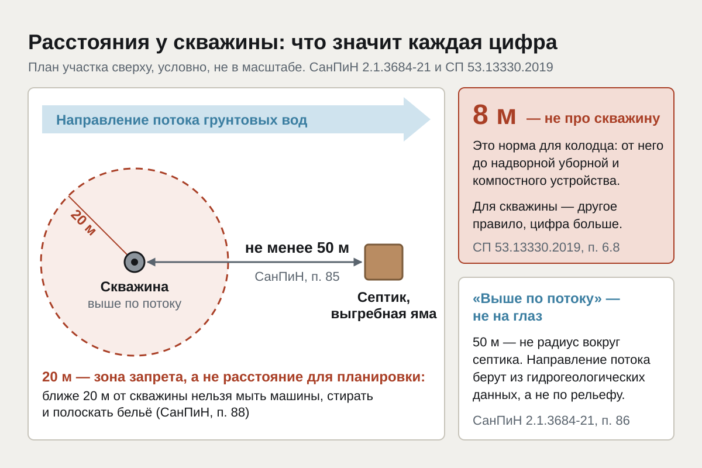
Расстояние от скважины до септика, дома и забораНормы расстояния от скважины до септика путают: 50, 20 и 8 метров взяты из разных документов. К чему относится каждая цифра и как быть на тесном участке.
Дата на сайте: 17 июля 2026 г.
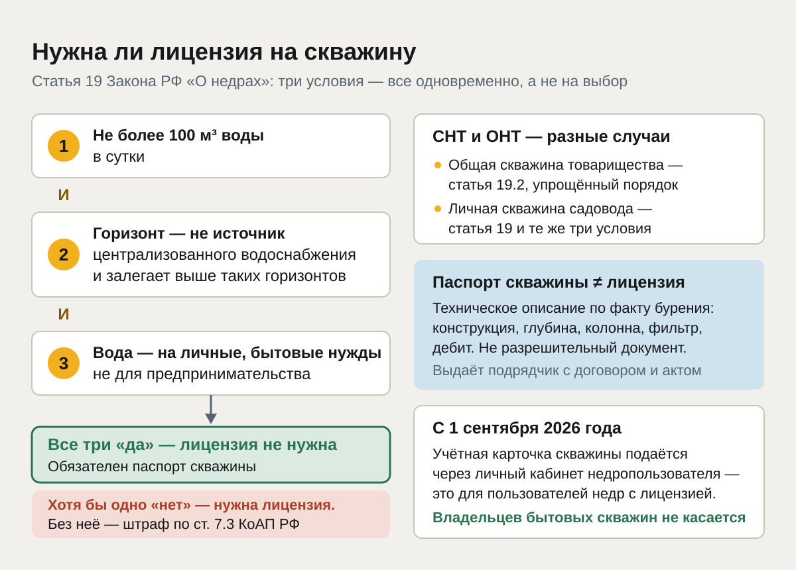
Нужна ли лицензия на скважину и какие нужны документыЛицензия на скважину не нужна, если выполнены три условия статьи 19 закона «О недрах». Что это за условия, что изменится с 1 сентября 2026 года и зачем паспорт.
Дата на сайте: 5 июля 2026 г.
 Скважинный насос: как подобрать под свою скважину
Скважинный насос: как подобрать под свою скважинуСкважинный насос «с запасом» выкачивает больше, чем отдаёт горизонт, и губит фильтр. Подбираем насос по дебиту, динамическому уровню, напору и диаметру колонны.
Дата на сайте: 29 июня 2026 г.
 Кессон для скважины: когда нужен, а когда хватит адаптера
Кессон для скважины: когда нужен, а когда хватит адаптераКессон для скважины нужен не всегда. Выбор между кессоном и адаптером решают две величины: расчётная глубина промерзания и уровень грунтовых вод на участке.
Дата на сайте: 20 июня 2026 г.
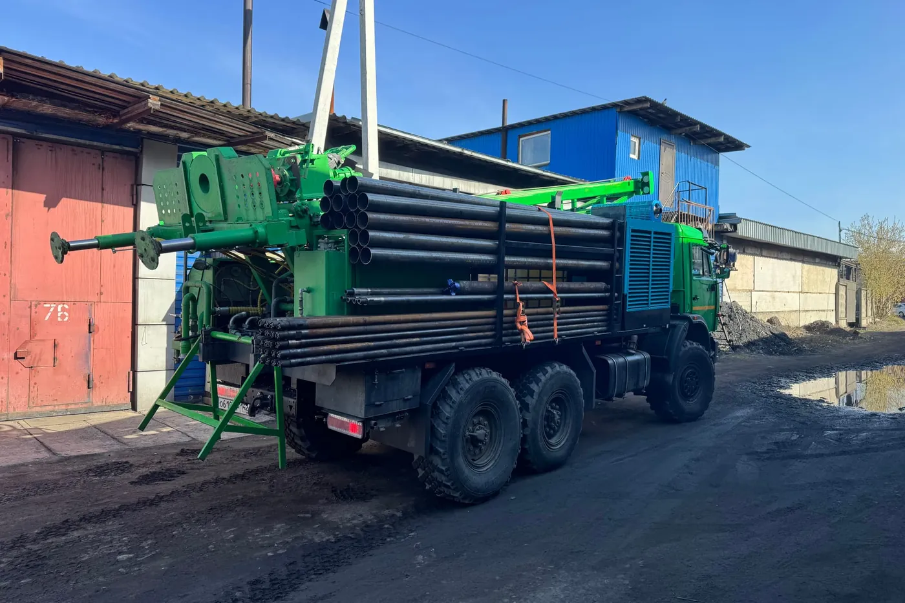
Обустройство скважины: что превращает трубу в водопроводПробуренная скважина — не водопровод. Проходим путь от устья до ввода в дом: оголовок, кессон или адаптер, насос, гидроаккумулятор, автоматика и разводка.
Дата на сайте: 2 июня 2026 г.
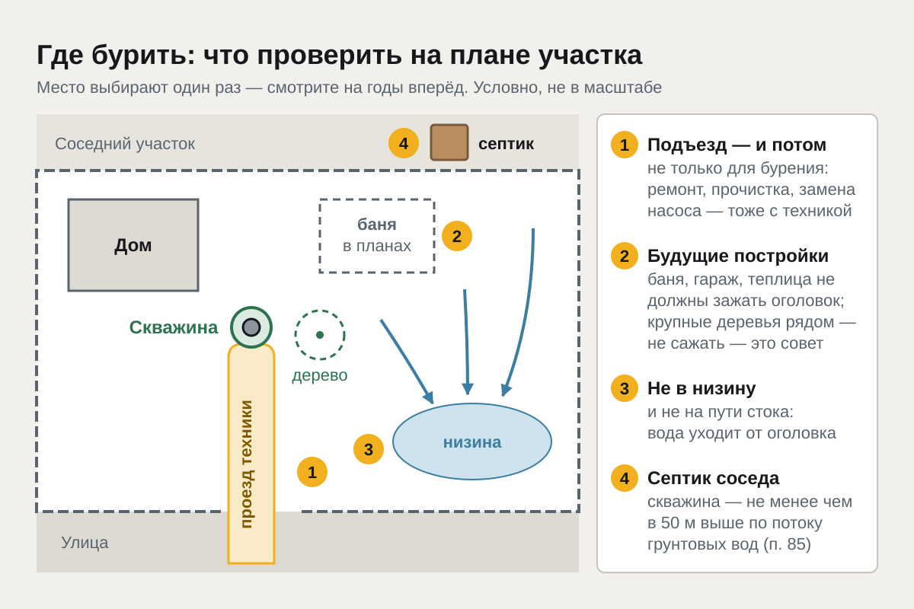
Где бурить скважину на участке: ошибки выбора местаМесто для скважины выбирают раз и навсегда. Ошибки, о которых молчат нормативы: подъезд для ремонта, будущие постройки и деревья, сток и соседские септики.
Дата на сайте: 27 мая 2026 г.
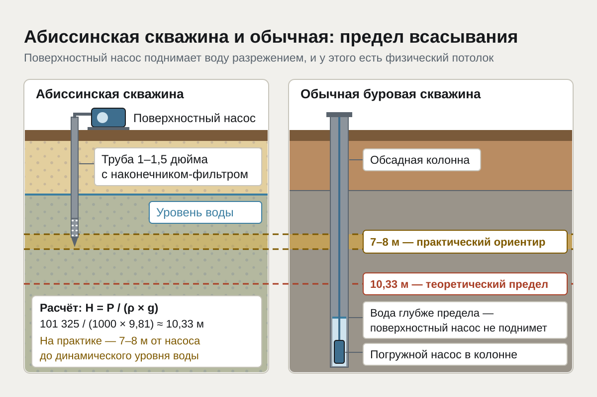
Абиссинская скважина: где работает, а где не стоитЗабивной колодец в разы дешевле буровой скважины, но работает не везде. Какой грунт и уровень воды нужны абиссинке и где на юге Кузбасса она не подойдёт.
Дата на сайте: 3 мая 2026 г.
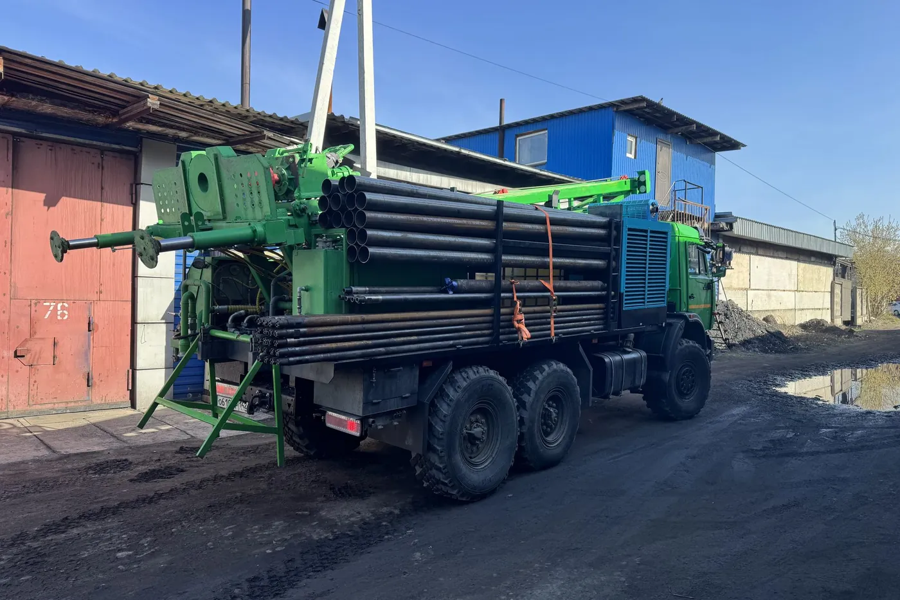
Обсадная труба: сталь или пластик и почему это не всёСталь, ПНД или нПВХ: выбор обсадной трубы зависит от глубины и пород. И неудобный факт — профильного ГОСТа на обсадную трубу для скважины на воду нет.
Дата на сайте: 27 апреля 2026 г.
 Бурение под ключ: что входит и что обычно не входит
Бурение под ключ: что входит и что обычно не входит«Под ключ» у каждого подрядчика означает свой список работ. Что обязано входить в бурение скважины, что выносят в допы и что спросить до подписания договора.
Дата на сайте: 21 апреля 2026 г.
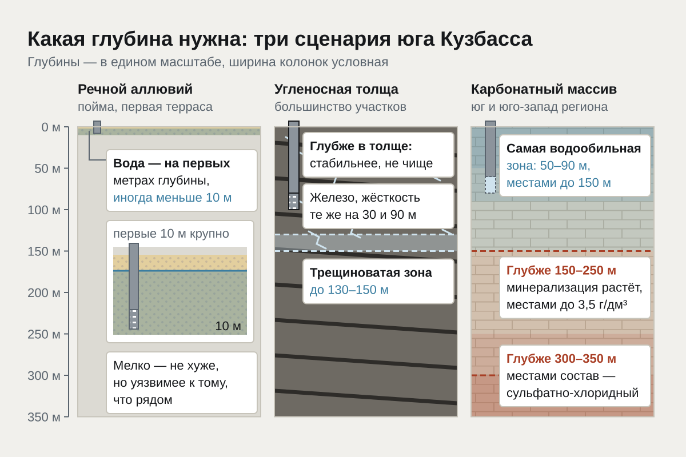
Глубина скважины для частного дома: сколько нужно«Чем глубже, тем чище» на юге Кузбасса верно не всегда. На трёх сценариях разбираем, какая глубина скважины нужна частному дому и что она на самом деле даёт.
Дата на сайте: 15 апреля 2026 г.
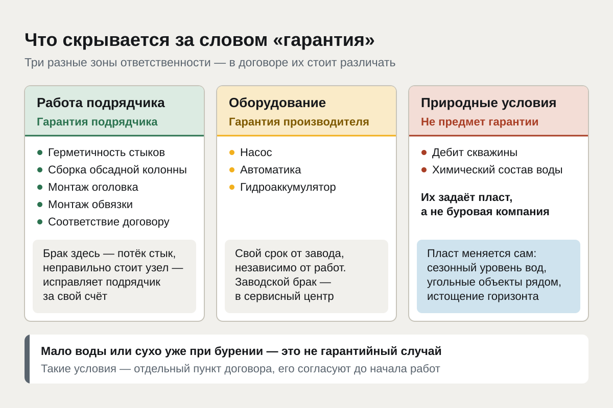
Гарантия на скважину: что она реально покрывает«Даём гарантию» без указания предмета ничего не значит. Что может покрывать гарантия на скважину, почему дебит и состав воды в неё не входят и как это записать.
Дата на сайте: 9 апреля 2026 г.
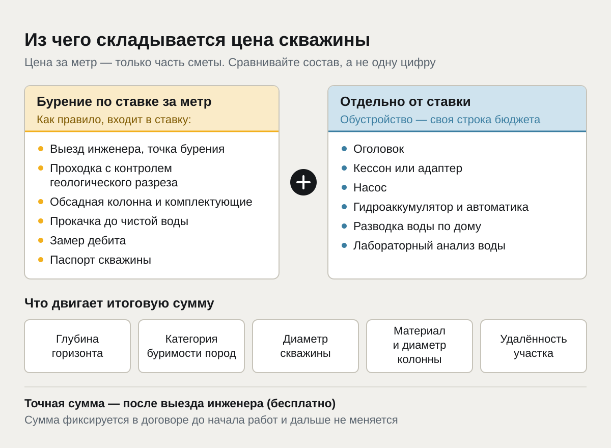
Сколько стоит скважина: из чего складывается ценаЦена скважины зависит от геологии участка, но структуру сметы можно разобрать заранее: что входит в бурение, что считают отдельно и как сравнивать подрядчиков.
Дата на сайте: 3 апреля 2026 г.
- Как выбрать буровую компанию: на что смотреть
Результат бурения скрыт под землёй, поэтому буровую компанию выбирают по проверяемым признакам: техника, договор, акт и паспорт скважины, тревожные сигналы.
Дата на сайте: 28 марта 2026 г.
 Скважина или колодец: что выбрать для частного дома
Скважина или колодец: что выбрать для частного домаКолодец на старте дешевле скважины, но это не вся цена. Сравниваем дебит, качество воды, сезонность и обслуживание и считаем стоимость владения за десять лет.
Дата на сайте: 22 марта 2026 г.
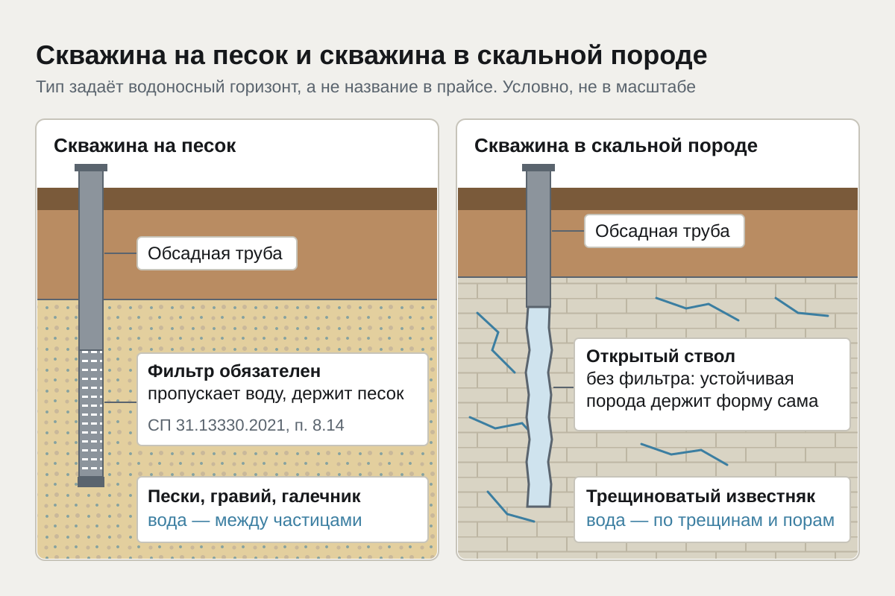
Виды скважин на воду: чем различаются и какую выбратьПесчаные и известняковые скважины на воду различаются конструкцией, дебитом и ресурсом, а тип задаёт горизонт участка. Почему «артезианская» — не знак качества.
Дата на сайте: 10 марта 2026 г.
Технология · 8
 Бурение скважины зимой: можно ли и что меняется
Бурение скважины зимой: можно ли и что меняетсяБурить скважину зимой можно. Что на морозе действительно меняется — промывочная жидкость и уровень воды в межень, — а какие страхи остаются заблуждениями.
Дата на сайте: 1 августа 2026 г.
 Геология юга Кузбасса: почему глубина везде разная
Геология юга Кузбасса: почему глубина везде разнаяЮг Кузбасса лежит на стыке двух геологических структур, поэтому глубина скважины меняется даже через дорогу. Разбираем слои от наносов до трещиноватых пород.
Дата на сайте: 29 июля 2026 г.
 Скважина на даче: с чего начать и на чём не экономить
Скважина на даче: с чего начать и на чём не экономитьДача живёт пиками: выходные, гости, полив. Как посчитать потребность в воде для дачной скважины, что из обвязки можно отложить и где экономия губит источник.
Дата на сайте: 26 июля 2026 г.
 Бурение на участке с уклоном и сложным рельефом
Бурение на участке с уклоном и сложным рельефомУклон и сложный рельеф не меняют глубину воды, зато меняют бурение: площадку под установку, подъезд техники, сток от оголовка и перепад высот до дома.
Дата на сайте: 23 июля 2026 г.
 Этапы бурения скважины: от выезда до первой воды
Этапы бурения скважины: от выезда до первой водыБурение скважины — это шесть этапов: выезд инженера, проходка, обсадка и фильтр, прокачка, опробование и паспорт. Что даёт каждый и чем грозит его пропуск.
Дата на сайте: 11 июля 2026 г.
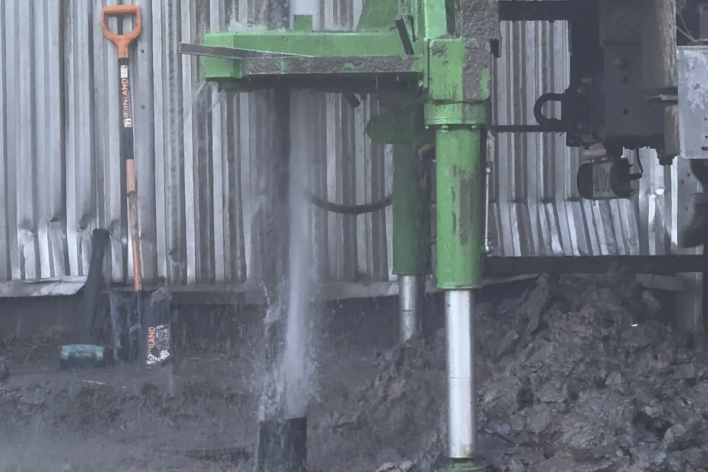
Роторное и ударно-канатное бурение: чем различаютсяРоторное и ударно-канатное бурение по-разному разрушают породу. Где каждый способ быстрее, как он влияет на вскрытие пласта и что применяют на юге Кузбасса.
Дата на сайте: 21 мая 2026 г.
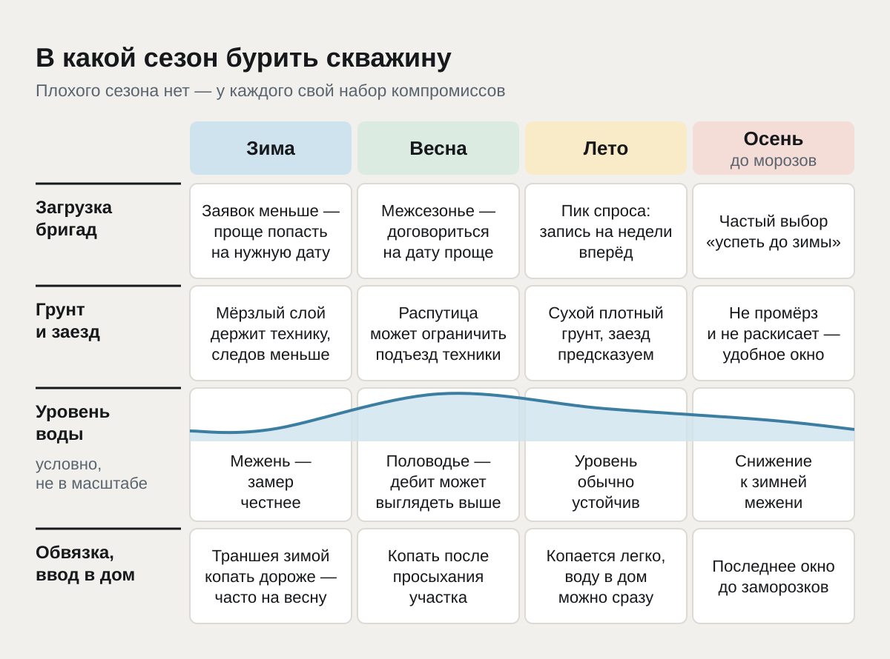
В какой сезон бурить скважину: сроки и состояние участкаПлохого сезона для бурения скважины на юге Кузбасса нет, но последствия разные. Сравниваем сроки, состояние участка, точность замера дебита и удобство обвязки.
Дата на сайте: 15 мая 2026 г.
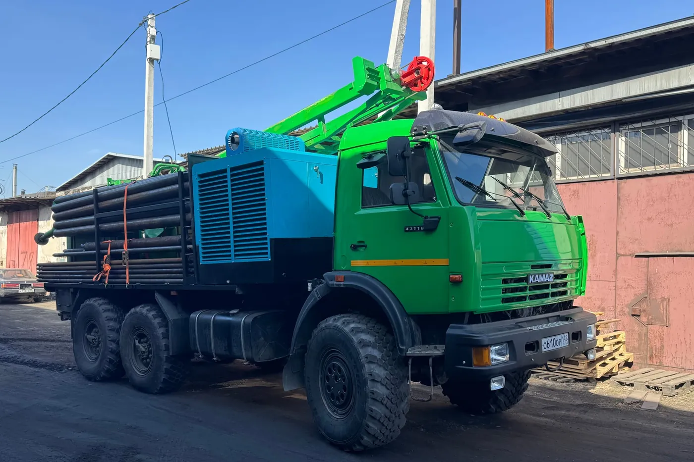
УРБ-2Д3 на КамАЗе: что установка может и чего нетГлубина бурения УРБ-2Д3 зависит от вращателя и способа проходки, а не от цифры в объявлении. Разбираем возможности установки на КамАЗе и роль шасси.
Дата на сайте: 16 марта 2026 г.
Проблемы и ремонт · 12
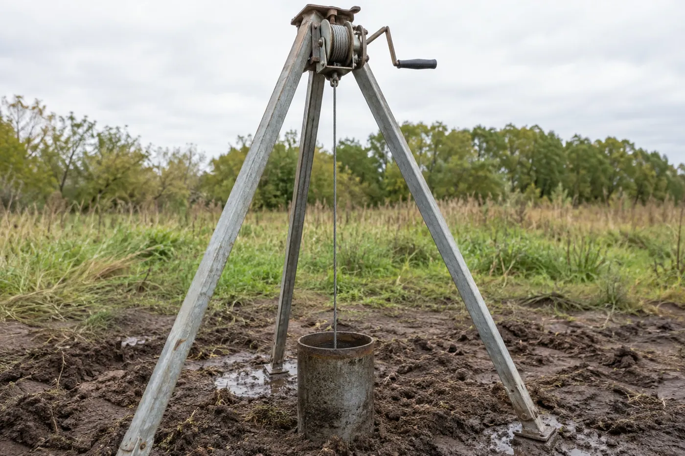
Замена насоса в скважине: когда она правда нужнаЗамена насоса в скважине помогает не всегда. Три измерения — ток, давление и динамический уровень — покажут до покупки, изношен насос или дело в скважине.
Дата на сайте: 23 июня 2026 г.
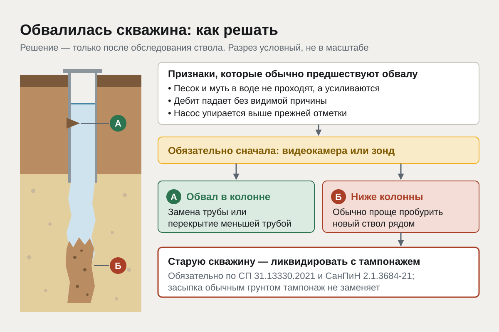
Обвалилась скважина: можно ли её восстановитьОбвалу скважины почти всегда предшествуют песок в воде и падение дебита. Когда ствол можно восстановить переобсадкой, а когда дешевле пробурить новый.
Дата на сайте: 14 июня 2026 г.
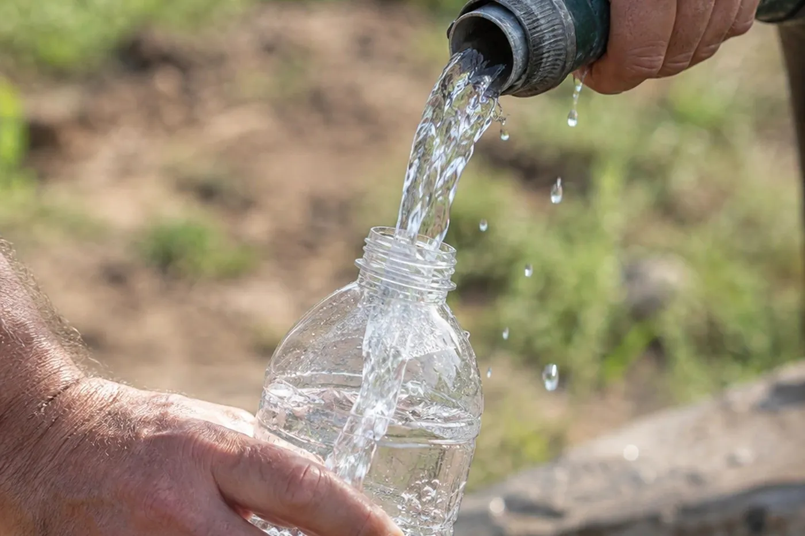
Анализ воды из скважины: когда и на что сдаватьПрозрачная вода из скважины может не проходить по железу, жёсткости или микробиологии. Когда сдавать анализ, что проверять в Кузбассе и как отобрать пробу.
Дата на сайте: 11 июня 2026 г.
 Скважина даёт мало воды: почему падает дебит
Скважина даёт мало воды: почему падает дебитДебит скважины может падать из-за пласта, фильтра, ствола или насоса. Разбираем, где искать причину, когда воды стало меньше, и что из этого можно восстановить.
Дата на сайте: 5 июня 2026 г.
- Прочистка скважины: какие способы действительно работают
Промывка, эрлифт, желонка, импульсные и реагентные методы: как работает каждый способ прочистки скважины, чем рискует для колонны и когда чистка не спасёт.
Дата на сайте: 24 мая 2026 г.
 Ремонт скважины своими руками: что можно, а что нет
Ремонт скважины своими руками: что можно, а что нетНе всякий ремонт скважины требует бригады. Что безопасно сделать своими руками, что на грани, а за что браться нельзя, чтобы не оставить насос в стволе.
Дата на сайте: 12 мая 2026 г.
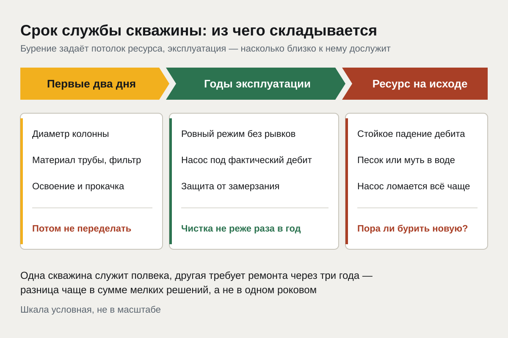
Срок службы скважины: от чего зависит ресурсРесурс скважины закладывают в первые два дня работ, а сохраняют годами эксплуатации. Что влияет на срок службы — от материала колонны до ухода владельца.
Дата на сайте: 9 мая 2026 г.
 Запах воды из скважины: как определить причину
Запах воды из скважины: как определить причинуТухлые яйца, болото, металл: запах воды из скважины подсказывает причину ещё до анализа. Что в нём от природы Кузбасса, а что говорит о проблеме в скважине.
Дата на сайте: 30 апреля 2026 г.
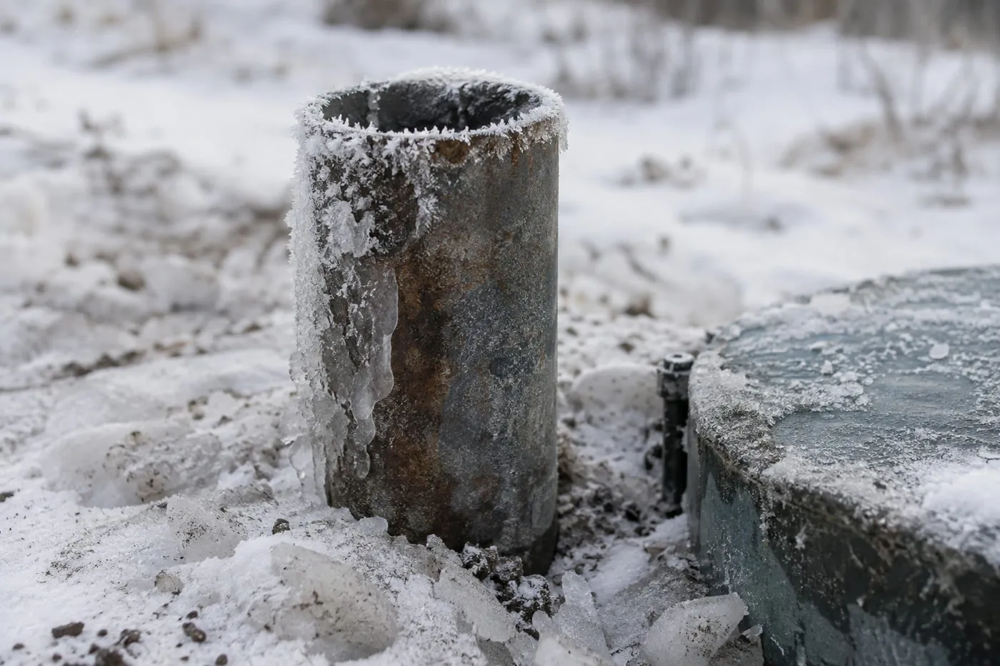
Скважина перемёрзла: как отогреть без последствийЕсли скважина перемёрзла, сначала найдите, где лёд. Безопасные способы отогрева, приёмы, которые ломают скважину окончательно, и как не допустить повторения.
Дата на сайте: 18 апреля 2026 г.
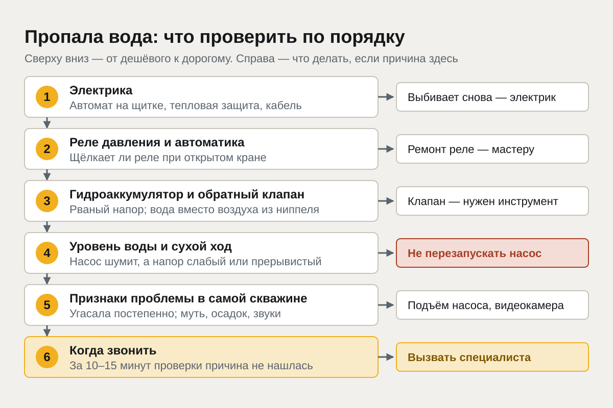
Пропала вода в скважине: что проверить по порядкуЕсли пропала вода в скважине, начните с простого: электрика, реле давления, гидроаккумулятор и клапан. Когда виновата сама скважина и пора звать бригаду.
Дата на сайте: 6 апреля 2026 г.
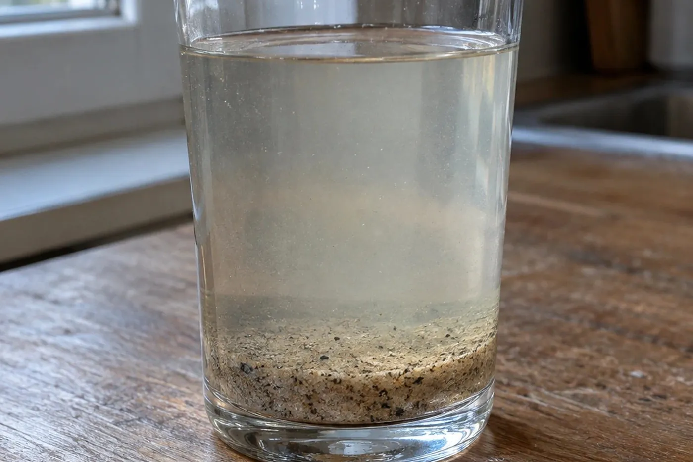
Вода с песком из скважины: причины и что делатьПесок в воде из скважины губит насос и сантехнику. По характеру взвеси и времени появления определяем причину: освоение, фильтр, избыточный насос или колонна.
Дата на сайте: 25 марта 2026 г.
 Скважина заилилась: отчего это происходит
Скважина заилилась: отчего это происходитСкважина заиливается не от поломки, а от режима: в простое тонкая взвесь оседает и уплотняется. Откуда берётся ил и какой режим это отсрочит.
Дата на сайте: 13 марта 2026 г.
Города · 15
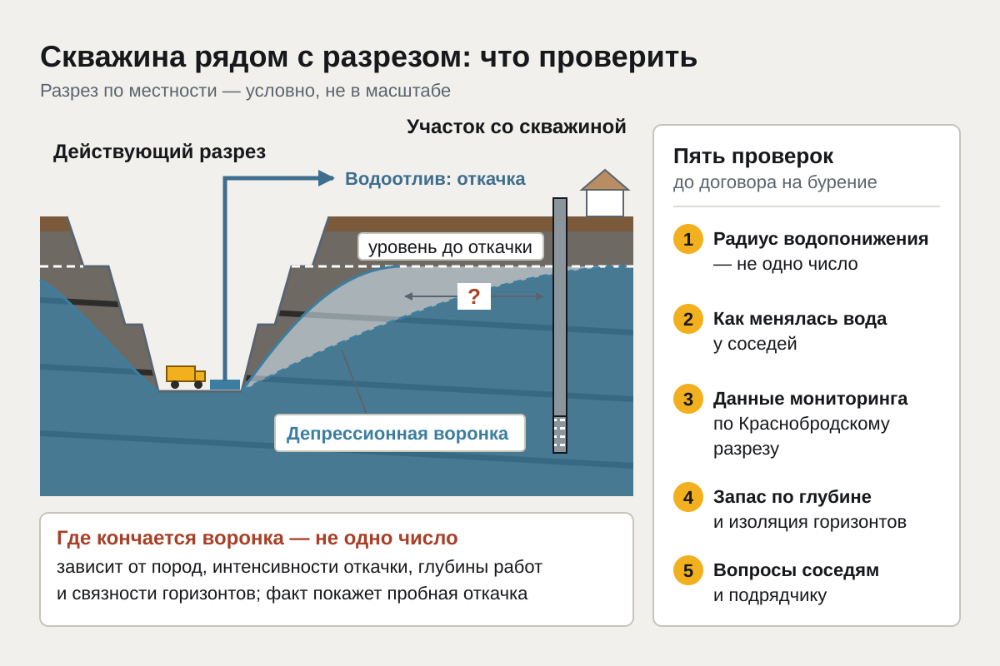
Скважина в Красном Броде: участок рядом с угольным разрезомУчасток в Красном Броде рядом с действующим разрезом: не уйдёт ли вода из скважины? Пять проверок до договора — от радиуса водопонижения до опыта соседей.
Дата на сайте: 20 июля 2026 г.
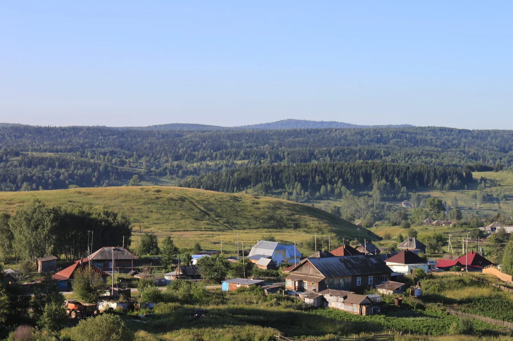
Скважины в Салаире: как древние породы кряжа влияют на водуСалаирский кряж сложен древними породами, не похожими на рыхлые отложения котловины. Как это сказывается на жёсткости воды в Салаире и на бурении скважин.
Дата на сайте: 14 июля 2026 г.
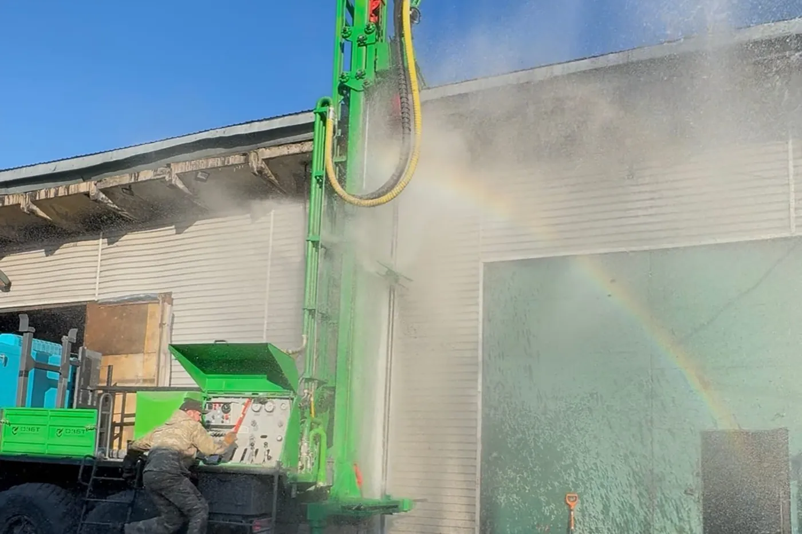
Скважины в Полысаево: почему решает освоение, а не глубинаДве соседние скважины в Полысаево одной глубины служат по-разному. Решает освоение: прокачка, опробование откачкой, дезинфекция и первый анализ воды.
Дата на сайте: 8 июля 2026 г.
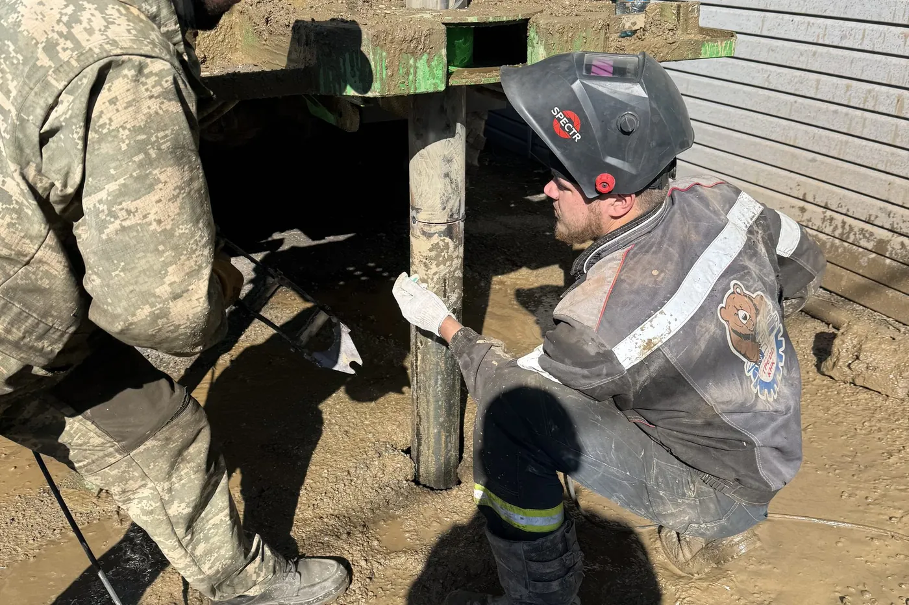
Скважины в Гурьевске: как устроена долговечная скважинаВ Гурьевске ресурс скважины определяет не число метров, а конструкция. Разбираем её сверху вниз: оголовок, колонна, затрубное пространство, фильтр и отстойник.
Дата на сайте: 2 июля 2026 г.
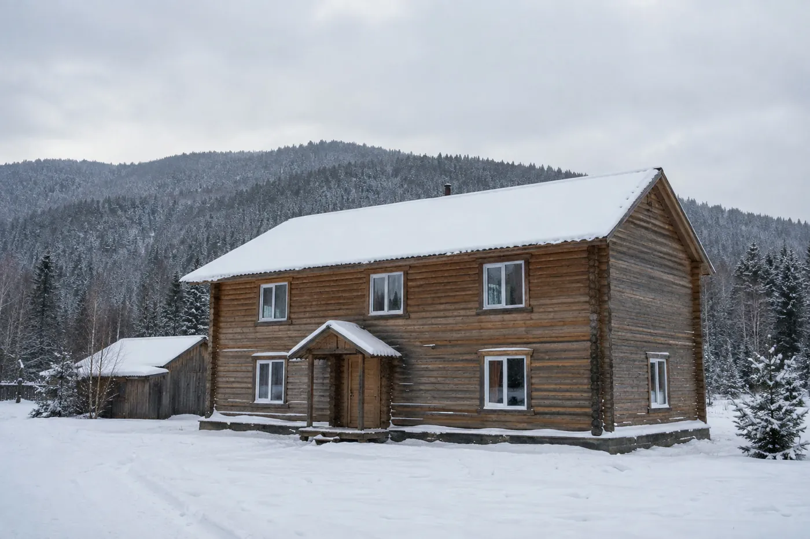
Скважина в Шерегеше: вода для дома, гостиницы и базыГостинице или турбазе в Шерегеше вода нужна неравномерно, с пиками в праздники и каникулы. Как рассчитать скважину под пик и зачем накопительная ёмкость.
Дата на сайте: 26 июня 2026 г.
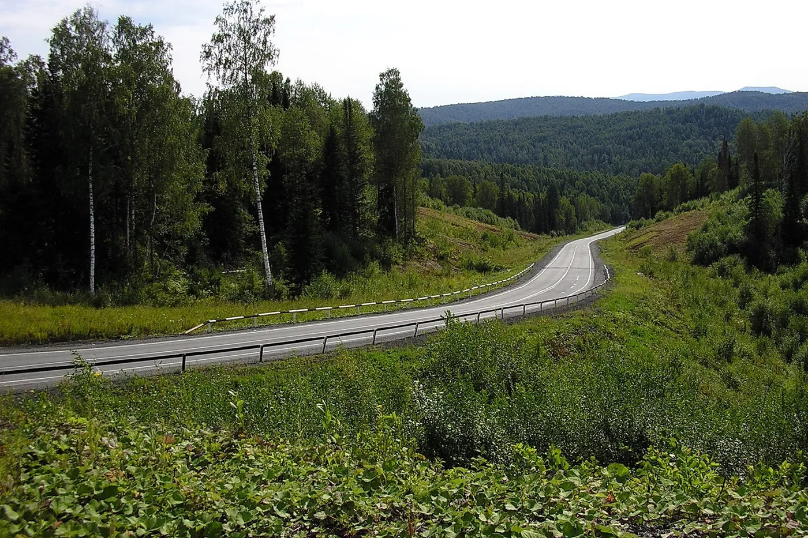
Скважины в Таштаголе: вода в горных породах ШорииВ Таштаголе и Горной Шории вода идёт по трещинам в породе, а не ровным пластом. Как ищут водоносную зону, когда скважине не нужен фильтр и чего от неё ждать.
Дата на сайте: 17 июня 2026 г.
 Дебит скважины в Мысках: как его измеряют и что он даёт
Дебит скважины в Мысках: как его измеряют и что он даётХватит ли воды дому в Мысках, решает дебит, а не глубина. Как его измеряют при опробовании откачкой и сколько воды в сутки на самом деле нужно дому.
Дата на сайте: 8 июня 2026 г.
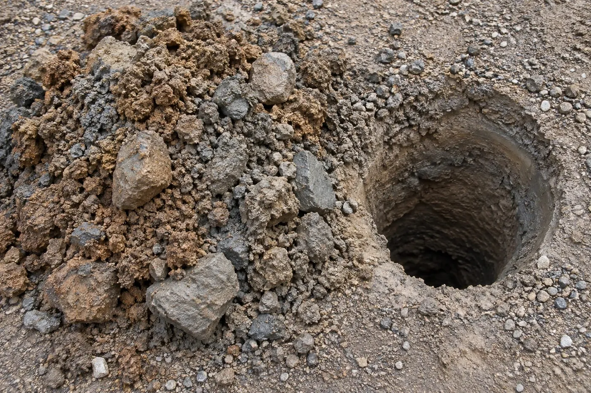
Скважины в Калтане: грунт, скорость проходки и фонСкорость бурения в Калтане задаёт порода, а не мощность установки. Что такое категория буримости и почему у золоотвалов анализ воды из скважины обязателен.
Дата на сайте: 30 мая 2026 г.
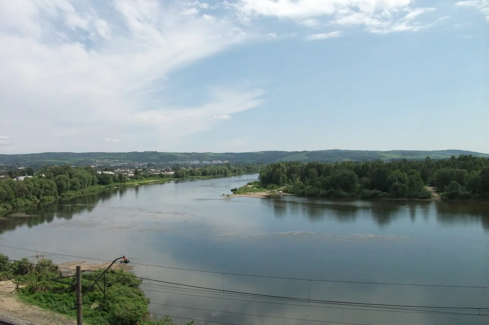
Скважины в Осинниках: отчего вода у соседей разнаяСкважины на соседних участках в Осинниках дают разную воду, потому что вскрывают разные горизонты. Кто выбирает горизонт и почему важна изоляция верхних слоёв.
Дата на сайте: 18 мая 2026 г.
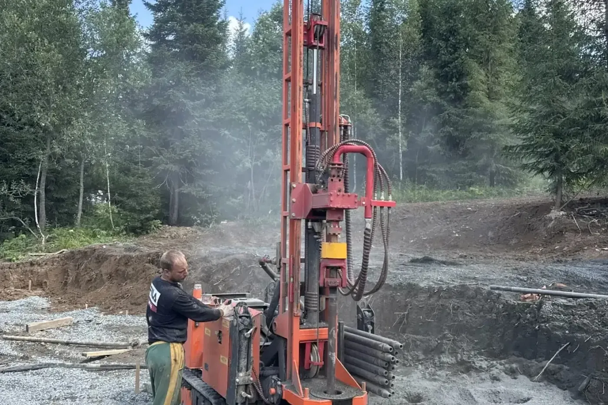
Скважина в Междуреченске: рельеф решает больше геологииВ Междуреченске, зажатом между горами, смету и сроки бурения скважины часто решает рельеф: подъезд техники, выбор площадки и отвод промывочной воды.
Дата на сайте: 6 мая 2026 г.
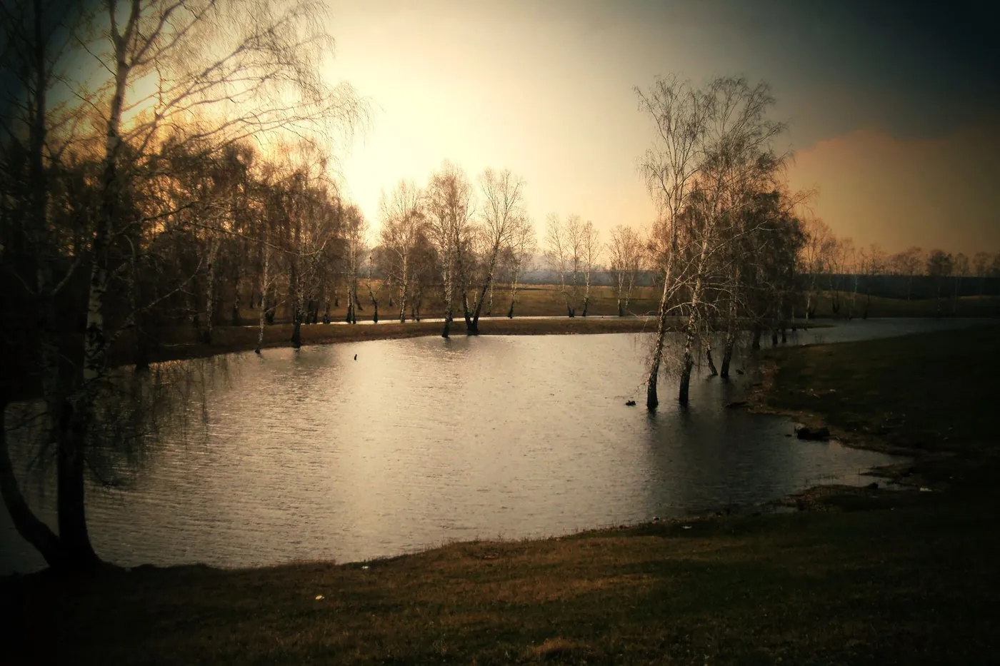
Скважина в Ленинске-Кузнецком: откуда берётся расчёт глубиныГлубину скважины в Ленинске-Кузнецком инженер считает до выезда — по фондовым материалам, мониторингу недр и паспортам соседних скважин, а не бурит наугад.
Дата на сайте: 24 апреля 2026 г.
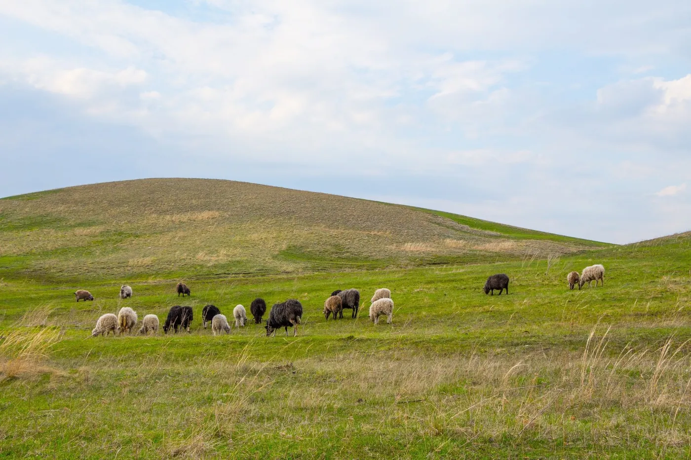
Скважины в Белово: почему у соседних посёлков разная водаВ Белово соседние посёлки и даже участки стоят на разных горизонтах. Сравниваем долины, водоразделы и зону Бачатского разреза по глубине и качеству воды.
Дата на сайте: 12 апреля 2026 г.
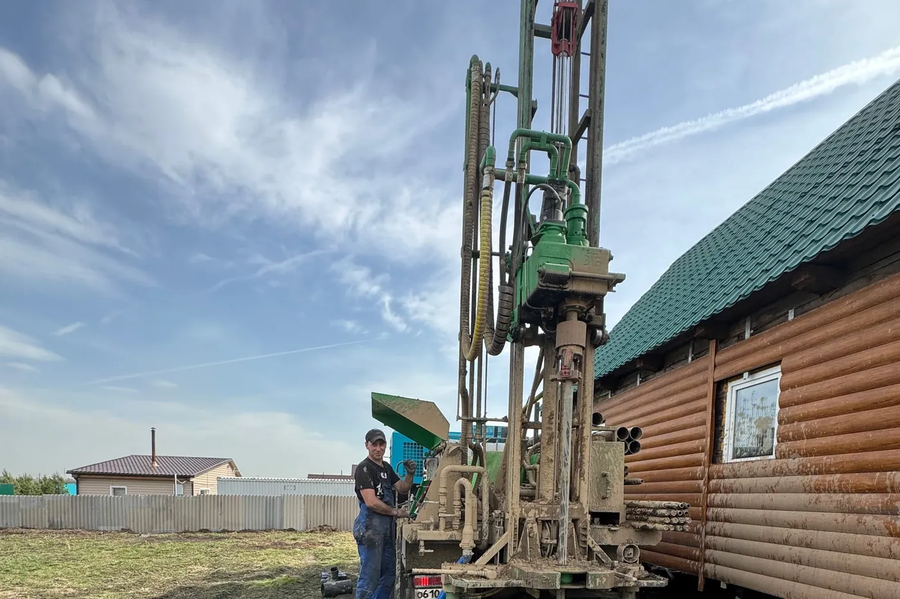
Скважина в Киселёвске: что известно заранее, а что нетТочную глубину скважины в Киселёвске по телефону честно не назвать. Что известно до выезда инженера, что выясняется при проходке и как это записать в договор.
Дата на сайте: 31 марта 2026 г.
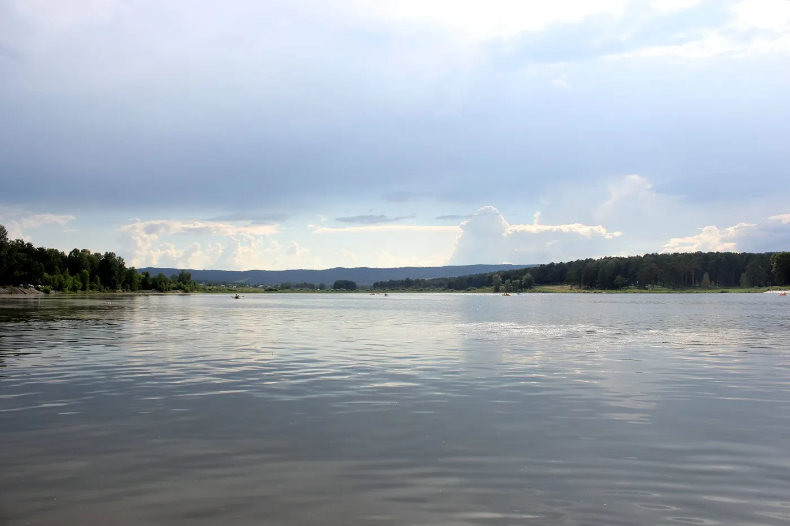
Скважина в Прокопьевске: участок на старых шахтных поляхПод многими дворами Прокопьевска остались затопленные шахтные выработки. Чем это грозит подземным водам и как проверить участок до бурения скважины.
Дата на сайте: 19 марта 2026 г.
- Скважины в Новокузнецке: что под участком в разных районах
Новокузнецк стоит на слиянии Томи и Кондомы, и под участками в пойме, на террасе и на склоне лежат разные породы. Что это меняет для скважины.
Дата на сайте: 7 марта 2026 г.